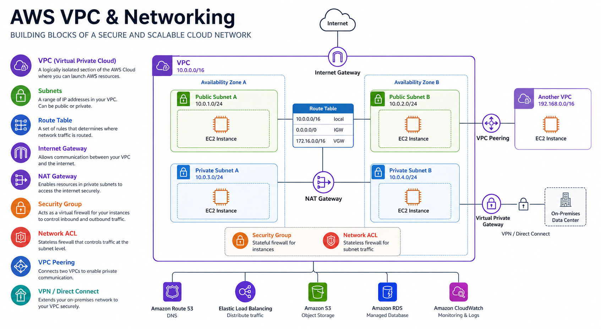

Demystifying AWS VPC: From Layman to Cloud Architect
AWS Series | Part 1 — Building secure, cost-optimised, cloud-native infrastructure on AWS

Why Do We Need a VPC?
Think of a VPC as your own private data center in the cloud. Without it, your resources would be floating in a shared space. A VPC gives you isolation, security, and complete control over your virtual networking environment, including your own IP address range, subnets, and route tables.
IP Addressing & The "Rule of 5"
Every VPC has a primary IPv4 CIDR block. As seen in our architecture diagram above, we are using the 10.0.0.0/16 network address block, which supports 65,536 IP addresses.
Crucial Architect Fact: AWS reserves 5 IP addresses in every subnet!
From any CIDR range you define (for example, a 10.0.0.0/24 subnet), you lose the first 4 and the very last IP address:
- 10.0.0.0: Network Address.
- 10.0.0.1: Reserved for the VPC Router.
- 10.0.0.2: Reserved for the Amazon Provided DNS server.
- 10.0.0.3: Reserved for future use.
- 10.0.0.255: The network broadcast address. Since VPCs do not support broadcast, AWS reserves this address.
The Foundational Components
- Subnets: Segments of your VPC's IP range. You use them to group resources (like Web, App, and DB tiers) based on security needs.
- Availability Zones (AZs): Data centers within a region. Always spread subnets across multiple AZs to achieve High Availability (HA).
- Route Tables: The "GPS" of your VPC. They contain a set of rules that determine where network traffic is directed.
Public vs. Private Subnets: The "Internet Gateway" Rule
A subnet is Public if its route table has a path to an Internet Gateway (IGW). A Private Subnet has no direct path to the IGW and must use a NAT Gateway located in a public subnet to reach the outside world securely.
Two Layers of Firewalls
AWS provides a layered defense approach to network security:
- Security Groups (Stateful): These act at the Instance level. They are "smart"—if you allow traffic in, the response is automatically allowed out.
- Network ACLs (Stateless): These act at the Subnet level. They are "rigid"—you must explicitly allow both inbound and outbound traffic separately.
Architect's Tips & Best Practices:
- Sizing: Choose a CIDR block that is large enough (e.g., /16) to accommodate future growth.
- Avoid Overlap: Ensure your IP ranges don't conflict with on-prem networks or peer VPCs.
- Flow Logs: Enable VPC Flow Logs for every critical environment to ensure full visibility for debugging.